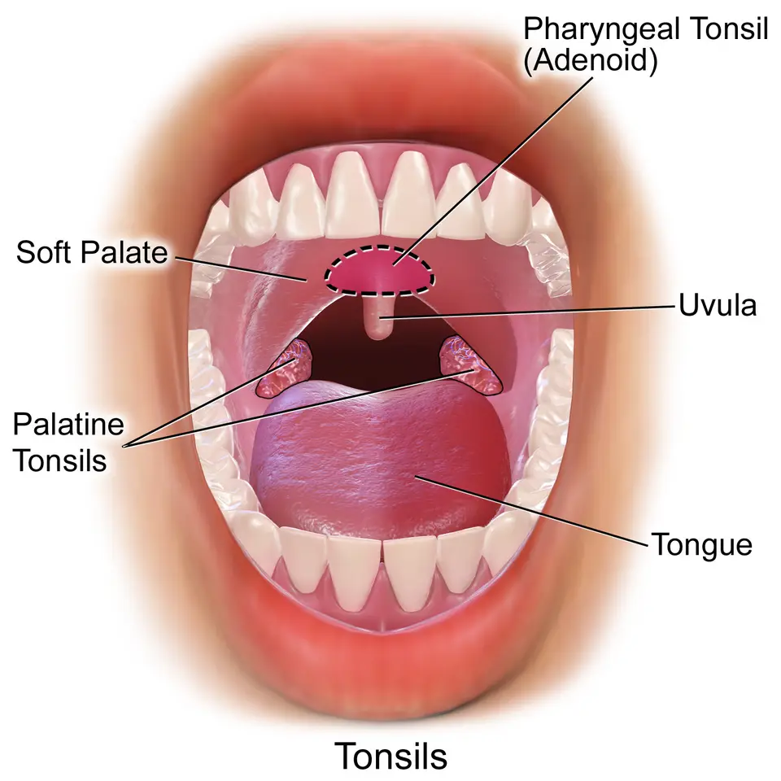

DX.6 — Hypertrophie adénoïdienne
L’enfant qui ronfle, respire la bouche ouverte et enchaîne les otites présente souvent des végétations adénoïdes trop volumineusesS1S2. Le médecin confirme l’obstruction par l’endoscopie du rhinopharynx, recherche les apnées du sommeil et l’atteinte de l’oreille, puis gradue le traitement de l’attente à l’adénoïdectomieS1S2S3. Chaque dose suit l’information professionnelle suisse (AIPS) de Swissmedic ; une indication absente de l’AIPS est écrite « hors AIPS », sans dose.
Ce cours sur l’hypertrophie adénoïdienne reprend les sources citées ; il n’a pas été validé cliniquement par un médecin.
1. Définition
L’hypertrophie adénoïdienne est une augmentation de volume de l’amygdale pharyngée, associée à une obstruction mécanique ou à une inflammation chronique du rhinopharynxS2.
2. Épidémiologie (Suisse, puis Europe)
Les végétations se développent pendant la première année, atteignent leur taille maximale entre 4 et 6 ans, puis régressent jusqu’à disparaître chez le grand adolescentS1. La recommandation allemande S2k confirme que les enfants de 1 à 6 ans sont les plus touchés, car l’involution physiologique commence vers 6 ansS2. Les chiffres utiles rassemblent les repères d’âge et de risque, tandis que la courbe d’âge relie chaque âge au diagnostic à évoquerS1S2.
Chiffres utiles : Suisse, puis Europe
| Donnée | Valeur | Population, lieu, date | Source |
|---|---|---|---|
| Taille maximale des végétations | Entre 4 et 6 ans | Enfants, Hôpitaux universitaires de Genève (HUG), page du 23.10.2026 | S1 |
| Âge le plus touché | 1 à 6 ans | Recommandation S2k allemande, 2023 | S2 |
| Début de l’involution | Vers 6 ans, achevée à la puberté | Recommandation S2k, 2023 | S2 |
| Saignement après adénoïdectomie | 0,5 à 8,0 % | Littérature reprise par la S2k, 2023 | S2 |
| Histologie de routine | 54 % des 68 services interrogés | Enquête allemande non représentative, S2k 2023 | S2 |
| Seuil de traitement des apnées | Index d’apnées-hypopnées supérieur à 5 par heure | Enfants de 2 à 18 ans, European Respiratory Society (ERS), 2016 | S3 |
| Seuil intermédiaire | Index de 1 à 5 par heure avec morbidité ou facteur de persistance | ERS, 2016 | S3 |
Les sources suisses lues ne chiffrent pas la prévalence ; le rang 5 de la Phase A repose donc sur l’âge typique et l’opération fréquenteS1S2. La ligne des saignements reste la plus utile au conseil des parents, puisque le saignement constitue la principale complication de l’interventionS2.
Courbe d’âge : quel diagnostic évoquer devant une obstruction
| Âge | Diagnostic à évoquer d’abord | Indice | Source |
|---|---|---|---|
| Nouveau-né | Atrésie des choanes (DX.9) | Le nouveau-né ne peut respirer que par le nez | S6S2 |
| 1 à 6 ans | Hypertrophie adénoïdienne | Ronflement, bouche ouverte, otites | S2S1 |
| Jeune enfant, côté unique | Corps étranger nasal (DX.7) | Écoulement unilatéral | S2 |
| Garçon adolescent | Angiofibrome nasopharyngien juvénile | Tumeur vasculaire qui saigne facilement | S2 |
| Adolescent et adulte | Masse du rhinopharynx à explorer | Les végétations devraient avoir régressé | S2S1 |
| Adulte | Carcinome ou lymphome | Ulcération, saignement, surdité de transmission | S2 |
Une masse du rhinopharynx après la puberté impose une évaluation complète, si bien qu’on ne conclut jamais à de simples végétations chez l’adulteS2.
3. Physiopathologie
L’agrandissement des centres germinatifs du tissu lymphoïde forme la base de l’hypertrophie, entretenue par un cercle d’inflammation, de rétention des sécrétions et de récidiveS2. L’obstruction partielle des deux choanes bloque alors la respiration nasale, gêne l’évacuation des sécrétions et retentit sur la trompe d’EustacheS2S1. Les conséquences en chaîne relient chaque mécanisme à un signe clinique, et la planche anatomique situe les végétations dans le rhinopharynxS2S8.
Conséquences en chaîne de l’hypertrophie
| Mécanisme | Conséquence | Signe clinique | Source |
|---|---|---|---|
| Obstruction des choanes | Respiration buccale obligatoire | Bouche ouverte, faciès adénoïdien | S2S1 |
| Obstruction nocturne | Ronflement, apnées obstructives du sommeil | Sommeil agité, énurésie, somnolence diurne | S2S1 |
| Drainage nasal bloqué | Rhinite chronique | Rhinorrhée mucopurulente | S2S1 |
| Dysfonction tubaire | Épanchement de l’oreille moyenne, otites récidivantes | Surdité de transmission, rétraction tympanique | S2S1 |
| Surdité prolongée | Retard de langage | Parole retardée ou anormale | S2 |
| Respiration buccale chronique | Croissance faciale modifiée | Malocclusion, palais haut | S2S1 |
| Sommeil perturbé | Retentissement général | Retard de croissance pondérale | S2 |
La recommandation S2k ne considère l’hyperplasie comme une maladie que lorsqu’elle produit ces signes, ce qui évite d’opérer une simple imageS2. L’hypothèse d’une obstruction mécanique de la trompe reste cependant sans preuve solide, si bien que l’indication opératoire pour l’oreille se discute avec prudenceS2.
Planche guidée : le rhinopharynx et ses voisins
Coupe sagittale du nez, du pharynx et de la bouche — Cette planche anatomique en couleurs d’OpenStax montre l’amygdale pharyngée au toit du rhinopharynx, juste derrière les choanesS8.

La version brute montre les cavités nasales, le rhinopharynx, le voile du palais et les amygdales palatinesS8.
Les cinq cercles rouges de la copie annotée ont été contrôlés par superposition sur l’image brute ; leur numéro renvoie à la lecture.
- 1. L’amygdale pharyngée occupe le toit du rhinopharynx ; son hypertrophie ferme l’arrière des fosses nasalesS8S2.
- 2. Le rhinopharynx reçoit les choanes et l’orifice de la trompe auditive, ce qui explique l’atteinte de l’oreilleS8S2.
- 3. Les cornets restent en avant ; leur hypertrophie produit aussi une obstruction et entre dans le diagnostic différentielS8S2.
- 4. Le voile du palais ferme le rhinopharynx pendant la déglutition ; une fente sous-muqueuse doit être palpée avant l’opérationS8S2.
- 5. L’amygdale palatine est visible par la bouche, alors que l’amygdale pharyngée ne l’est pasS8S1.
Ce que l’image décide. La planche explique pourquoi l’examen de la bouche ne suffit pas : seule l’endoscopie du rhinopharynx montre l’amygdale pharyngéeS1S2.
4. Démarche diagnostique
La démarche part de l’obstruction nasale bilatérale de l’enfant, puis elle cherche le retentissement nocturne, auriculaire et facial avant de confirmer l’obstacleS2S1. Le médecin de famille ou le pédiatre qui trouve une anamnèse ou une otoscopie anormale adresse l’enfant à l’oto-rhino-laryngologiste (ORL), comme le recommande fortement la S2kS2. La démarche en six étapes fixe la question, l’outil, le seuil et la décision à chaque étapeS2S3.
Démarche diagnostique en six étapes
| Étape | Question clinique | Outil | Seuil ou repère | Décision | Source |
|---|---|---|---|---|---|
| 1. Reconnaître le tableau | Obstruction, bouche ouverte, ronflement ? | Anamnèse ciblée | Symptômes d’obstruction ou d’inflammation chronique | Végétations suspectées | S2S1 |
| 2. Chercher le retentissement nocturne | Apnées, sommeil agité, énurésie ? | Questions sur le sommeil | Apnées observées, somnolence diurne | Évaluer un trouble respiratoire du sommeil | S2S3 |
| 3. Examiner l’oreille | Épanchement, rétraction, surdité ? | Otomicroscopie, tympanométrie | Tympanogramme plat, surdité de transmission | Bilan auditif complet | S2 |
| 4. Voir l’obstacle | Le cavum est-il obstrué ? | Endoscopie souple ou rigide | Végétations obstructives | Diagnostic confirmé | S1S2 |
| 5. Écarter un autre diagnostic | Masse atypique, saignement, âge inhabituel ? | Endoscopie, imagerie si suspicion tumorale | Masse vasculaire ou ulcérée | Imagerie et avis spécialisé | S2 |
| 6. Mesurer la sévérité du sommeil | Quel index d’apnées-hypopnées ? | Polysomnographie de préférence | Plus de 5 par heure | Traitement indiqué | S3 |
Si l’enfant ne coopère pas pour l’endoscopie, l’anamnèse et l’aspect typique des tympans suffisent selon la S2k, ce qui évite un examen sous contrainteS2. L’étape 6 n’est pas systématique en Europe : la S2k la réserve aux cas individuels, alors que l’ERS mesure de préférence la sévérité par polysomnographieS2S3.
5. Anamnèse ciblée et drapeaux rouges
L’anamnèse doit explorer l’obstruction nasale, les apnées nocturnes, le sommeil, les infections répétées, les bronches, l’audition, le langage et les allergiesS2. Une infection est dite récidivante lorsqu’elle est inhabituellement sévère ou nettement plus fréquente que la moyenne de l’âge, selon la définition de la S2kS2. La grille d’anamnèse donne la question et son interprétation, et les drapeaux rouges listent ce qui sort des végétations simplesS2S3.
Grille d’anamnèse ciblée
| Question aux parents | Réponse évocatrice | Interprétation | Source |
|---|---|---|---|
| Respire-t-il par la bouche ? | Bouche ouverte en permanence | Obstruction nasale chronique | S2S1 |
| Ronfle-t-il ? | Ronflement nocturne régulier | Trouble respiratoire du sommeil possible | S2S3 |
| Fait-il des pauses respiratoires ? | Apnées observées | Apnées obstructives à évaluer | S2S3 |
| Mouille-t-il son lit ? | Énurésie nocturne | Signe associé au sommeil perturbé | S2S3 |
| Est-il somnolent le jour ? | Fatigue, somnolence | Retentissement du sommeil | S2 |
| Fait-il des otites ? | Otites aiguës récidivantes | Dysfonction tubaire | S2S1 |
| Entend-il bien ? | Fait répéter, monte le son | Surdité de transmission | S2 |
| Parle-t-il comme les enfants de son âge ? | Retard de langage | Bilan de l’audition et du langage | S2 |
| A-t-il des allergies ? | Éternuements, prurit nasal | Tests allergiques aux pneumallergènes | S2 |
| Saigne-t-il facilement ? | Saignements prolongés dans la famille | Bilan de coagulation avant chirurgie | S2 |
La dernière question est obligatoire avant toute chirurgie, puisque la S2k impose un questionnaire structuré de saignement chez chaque enfant opéréS2. La réponse sur le langage compte aussi, car une surdité prolongée peut retarder la parole et justifier une prise en charge plus rapideS2.
Drapeaux rouges : quand penser à autre chose
| Signe | Cause à craindre | Conduite | Source |
|---|---|---|---|
| Saignement du nez chez un garçon adolescent | Angiofibrome nasopharyngien juvénile | Imagerie, avis ORL spécialisé | S2 |
| Ulcération, saignement, croissance de la masse | Carcinome ou lymphome | Imagerie et biopsie | S2 |
| Surdité de transmission unilatérale de l’adulte | Tumeur du rhinopharynx | Endoscopie et imagerie | S2 |
| Apnées avec retard de croissance ou atteinte cardiovasculaire | Trouble respiratoire du sommeil sévère | Polysomnographie et traitement rapide | S3 |
| Symptômes unilatéraux persistants | Corps étranger, polype, tumeur | Endoscopie nasale | S4 |
| Œdème périorbitaire, diplopie, signes méningés | Complication d’une rhinosinusite | Orientation immédiate | S4 |
| Obstruction nasale du nouveau-né, qui ne respire que par le nez | Atrésie des choanes bilatérale | Urgence néonatale (DX.9) | S6 |
Les végétations simples ne saignent pas spontanément et ne touchent pas un seul côté ; ces deux signes doivent donc faire chercher une autre lésionS2S4.
6. Examen physique ciblé, région par région
L’examen spécialisé comprend d’abord l’inspection du visage, la rhinoscopie, l’endoscopie du rhinopharynx, l’examen des amygdales palatines, des ganglions et des deux tympansS2. Chaque région est donc détaillée dans sa fenêtre : visage, nez, rhinopharynx, bouche et palais, oreilles et couS2.
Région 1 — Visage : le faciès adénoïdien
| Geste | Trouvaille | Interprétation | Source |
|---|---|---|---|
| Inspection au repos | Bouche ouverte en permanence, pointe de la langue visible | Faciès adénoïdien | S2 |
| Inspection de l’entrée du nez | Eczéma narinaire | Écoulement chronique | S2 |
| Inspection de la mâchoire | Croissance faciale perturbée | Respiration buccale prolongée | S1S2 |
Le faciès adénoïdien est décrit comme le signe cardinal de la respiration buccale, mais il ne remplace pas la vision directe de l’obstacleS2.
Région 2 — Nez : rhinoscopie antérieure
| Geste | Trouvaille | Interprétation | Source |
|---|---|---|---|
| Rhinoscopie si tolérée | Sécrétions mucopurulentes | Rhinite chronique associée | S2 |
| Inspection des cornets | Cornets hypertrophiques | Autre cause d’obstruction | S2 |
| Recherche d’un corps étranger | Objet dans une fosse nasale | Diagnostic différentiel DX.7 | S2 |
La rhinoscopie antérieure ne montre pas les végétations, car elles siègent derrière les choanes ; elle sert surtout à écarter un autre obstacleS2S1.
Région 3 — Rhinopharynx : endoscopie
| Geste | Trouvaille | Interprétation | Source |
|---|---|---|---|
| Endoscopie souple par le nez | Végétations qui obstruent le cavum | Diagnostic confirmé | S1S2 |
| Endoscopie rigide, optique à 70 degrés par la bouche | Même trouvaille | Alternative possible | S2 |
| Aspect de la masse | Lisse, vasculaire, ulcérée ou asymétrique | Tumeur ou kyste de Thornwaldt | S2 |
L’endoscopie distingue aussi l’hypertrophie de la rhinosinusite et de l’adénoïdite, ce qui oriente vers un traitement différentS2.
Région 4 — Bouche et palais
| Geste | Trouvaille | Interprétation | Source |
|---|---|---|---|
| Inspection des amygdales palatines | Amygdales volumineuses | Obstruction mixte, diagnostic différentiel | S2 |
| Inspection de la denture | Malocclusion, palais haut | Respiration buccale ancienne | S2 |
| Palpation du palais dur et mou | Encoche osseuse, luette bifide | Fente sous-muqueuse : contre-indication relative | S2 |
| Inspection du pharynx | Écoulement postérieur mucopurulent | Inflammation chronique | S2 |
La palpation du palais précède toujours l’opération, puisqu’une fente sous-muqueuse expose à une insuffisance vélopharyngée après adénoïdectomieS2.
Région 5 — Oreilles : otomicroscopie et tympanométrie
| Geste | Trouvaille | Interprétation | Conduite | Source |
|---|---|---|---|---|
| Otomicroscopie bilatérale | Épanchement rétrotympanique, rétraction | Dysfonction tubaire | Bilan auditif | S2 |
| Tympanométrie | Courbe plate | Ventilation de l’oreille moyenne altérée | Discuter des aérateurs | S2 |
| Audiométrie tonale ou otoémissions | Surdité de transmission | Retentissement auditif | Bilan du langage | S2 |
Ces examens servent aussi de référence, puisque l’enfant opéré avec surdité préalable repasse un examen auditif après cicatrisationS2.
Région 6 — Cou et état général
| Geste | Trouvaille | Interprétation | Source |
|---|---|---|---|
| Palpation des ganglions cervicaux | Adénopathies | Inflammation, ou tumeur si fermes et croissantes | S2 |
| Poids et taille sur la courbe | Cassure pondérale | Retentissement du sommeil perturbé | S2S3 |
| Anamnèse respiratoire basse | Toux, bronchite chronique | Inflammation des voies aériennes basses | S2 |
Une cassure de la courbe de croissance pèse lourd dans la décision, car l’ERS la range parmi les morbidités qui justifient le traitement des apnéesS3.
Planche guidée : pourquoi la bouche ne montre pas les végétations
Amygdales vues par la bouche ouverte — Cette illustration médicale en couleurs montre en pointillés l’amygdale pharyngée, qui reste cachée derrière le voile du palaisS7.

La version brute montre la bouche ouverte, le voile, la luette, les amygdales palatines et la langueS7.
Quatre repères numérotés figurent sur la copie annotée ; leur position a été vérifiée par superposition avant la rédaction.
- 1. La zone en pointillés indique l’amygdale pharyngée, invisible à l’examen direct car elle siège au-dessus du voileS7S1.
- 2. La luette reste visible ; une luette bifide doit faire palper le palais à la recherche d’une fente sous-muqueuseS7S2.
- 3. L’amygdale palatine se voit directement ; son volume s’apprécie en même temps que celui des végétationsS7S2.
- 4. Le voile du palais cache le rhinopharynx, si bien qu’une endoscopie reste nécessaire pour voir les végétationsS7S1.
Ce que l’image décide. L’image montre que l’examen de la gorge ne confirme pas les végétations : il faut l’endoscopie, ou à défaut l’anamnèse et les tympansS1S2.
7. Approche syndromique
Le syndrome d’obstruction nasale chronique de l’enfant rassemble plusieurs causes, que l’âge, le côté atteint et l’endoscopie séparentS2. Le tableau des voisins range donc les voisins selon la liste gelée et montre, pour chacun, l’indice qui le sépare des végétationsS2S4.
Diagnostics voisins dans l’ordre de la liste gelée
| Diagnostic | Signe qui oriente | Signe qui sépare des végétations | Source |
|---|---|---|---|
| DX.9 Atrésie des choanes 🚩 E1 | Nouveau-né, forme incomplète plus tard | Choane fermée à l’endoscopie | S2S6 |
| DX.8 Hématome de la cloison 🚩 E2 | Choc nasal récent, obstruction des deux côtés | Rhinoscopie : tuméfaction molle et sombre de la cloison | DX.8 |
| DX.7 Corps étranger nasal 🚩 E3 | Écoulement unilatéral fétide | Côté unique, objet visible | S2 |
| DX.10 Tumeur maligne nasosinusienne 🚩 E4 | Adulte, saignement, ulcération | Âge, masse ulcérée | S2 |
| DX.2 Rhinite virale aiguë | Rhume récent | Résolution spontanée | S2 |
| DX.1 Rhinite allergique | Éternuements, prurit, saison | Cavum libre, tests allergiques positifs | S2S4 |
| DX.4 Déviation de la cloison | Obstruction fixe | Déformation visible en rhinoscopie | S2 |
| DX.5 Rhinosinusite chronique avec polypes | Polypes, anosmie | Rare chez l’enfant ; polypes visibles | S4 |
| DX.3 Rhinite médicamenteuse | Spray décongestionnant prolongé | Lien avec le médicament | S2 |
| Hypertrophie des amygdales palatines (hors liste) | Ronflement, voix étouffée | Amygdales volumineuses à l’examen buccal | S2 |
| Kyste de Thornwaldt (hors liste) | Masse ronde du rhinopharynx | Muqueuse lisse à l’endoscopie | S2 |
La S2k indique en effet que les amygdales palatines, l’atrésie incomplète des choanes, le corps étranger, les cornets et la rhinite peuvent imiter les végétationsS2. Le parcours pédiatrique de l’European Position Paper on Rhinosinusitis (EPOS) 2020 indique que l’hypertrophie adénoïdienne est le premier diagnostic à évoquer devant une rhinosinusite chronique du jeune enfantS4.
8. Diagnostic positif et critères
Le diagnostic repose donc sur les symptômes, l’histoire et l’examen du rhinopharynx par endoscopie, selon le service ORL pédiatrique des HUGS1. Les critères de maladie séparent les végétations physiologiques, qui ne demandent rien, des végétations pathologiques, qui demandent une décisionS2S1.
Critères : quand les végétations deviennent une maladie
| Élément | Critère | Niveau | Source |
|---|---|---|---|
| Volume seul | Végétations volumineuses sans symptôme | Pas une maladie : attente | S2 |
| Obstruction | Respiration buccale, ronflement, apnées | Maladie | S2S1 |
| Inflammation chronique | Rhinorrhée mucopurulente, infections répétées | Maladie (adénoïdite si inflammation) | S2 |
| Retentissement auriculaire | Épanchement, otites aiguës récidivantes, surdité | Maladie avec complication | S2 |
| Confirmation | Végétations obstructives vues à l’endoscopie | Diagnostic certain | S1S2 |
| Enfant non coopérant | Anamnèse typique et tympans typiques | Diagnostic clinique suffisant | S2 |
La notion de syndrome adénoïdien des HUG regroupe ces signes, puisque l’obstruction, la rhinite chronique et l’atteinte de l’oreille vont souvent ensembleS1.
9. Examens complémentaires
Les examens servent à voir l’obstacle, à mesurer le retentissement sur l’oreille et le sommeil, puis à préparer l’intervention en sécuritéS2S3. Les examens ciblés donnent l’indication, le seuil, l’interprétation et la conduite, et le bilan préopératoire détaille la coagulationS2.
Examens ciblés : indication, seuil, interprétation, conduite
| Examen | Indication | Seuil ou résultat | Interprétation | Conduite | Source |
|---|---|---|---|---|---|
| Endoscopie nasale souple ou rigide | Toute suspicion, si tolérée | Cavum obstrué | Végétations hypertrophiques | Décision thérapeutique | S2S1 |
| Tympanométrie | Toute suspicion | Courbe plate | Épanchement de l’oreille moyenne | Bilan auditif, discuter des aérateurs | S2 |
| Audiométrie tonale ou otoémissions | Tympanométrie anormale, langage retardé | Surdité de transmission | Retentissement auditif | Prise en charge plus rapide | S2 |
| Polysomnographie | Suspicion d’apnées, cas individuels | Index d’apnées-hypopnées supérieur à 5 par heure | Trouble respiratoire du sommeil à traiter | Traitement indiqué | S3S2 |
| Polysomnographie | Même indication | Index de 1 à 5 par heure | Traitement si morbidité ou facteur de persistance | Décision individuelle | S3 |
| Tests allergiques aux pneumallergènes | Anamnèse d’allergie | Sensibilisation | Rhinite allergique associée | Traiter la rhinite | S2 |
| Imagerie | Suspicion de tumeur ou d’angiofibrome | Masse atypique | Lésion à caractériser | Avis spécialisé | S2 |
| Histologie de la pièce | Suspicion tumorale, aspect anormal, mucopolysaccharidose | Résultat anatomopathologique | Diagnostic de certitude | Selon le résultat | S2 |
La radiographie du cavum ne figure pas dans les sources lues ; l’endoscopie reste l’examen recommandé par les HUG et par la S2kS1S2. L’histologie de routine n’est pas recommandée de manière définitive lorsque les constatations préopératoires et peropératoires restent normalesS2.
Bilan préopératoire de la coagulation
| Situation | Examen | Conduite | Source |
|---|---|---|---|
| Tout enfant opéré | Questionnaire structuré de saignement | Obligatoire avant chaque intervention | S2 |
| Questionnaire sans anomalie | Aucun test biologique de routine | Intervention possible | S2 |
| Histoire personnelle ou familiale de saignement | Tests de coagulation | Fortement recommandés avant chirurgie | S2 |
| Barrière de langue | Tests de coagulation | Le questionnaire perd sa fiabilité | S2 |
| Trouble de coagulation connu | Avis spécialisé | Contre-indication relative, hospitalisation | S2 |
Les tests de coagulation de routine détectent mal les troubles de l’hémostase avant chirurgie, ce qui explique la priorité donnée au questionnaireS2.
La démarche de l’ERS organise la prise en charge des troubles respiratoires du sommeil en sept étapes, que le médecin suit dans l’ordreS3. Les sept étapes européennes relient donc chaque étape à la question posée et à la décision attendueS3.
Troubles respiratoires du sommeil : les sept étapes de l’ERS
| Étape | Question | Ce que l’on cherche | Décision | Source |
|---|---|---|---|---|
| 1 | Le trouble est-il suspecté ? | Symptômes ou anomalies liés à l’obstruction des voies aériennes hautes | Poursuivre l’évaluation | S3 |
| 2 | Existe-t-il une morbidité ? | Atteinte du système nerveux central ou cardiovasculaire, retard de croissance, énurésie | Pèse en faveur du traitement | S3 |
| 3 | Le trouble risque-t-il de persister ? | Facteurs prédictifs de persistance à long terme | Pèse en faveur du traitement | S3 |
| 4 | Quelle est la sévérité ? | Mesure objective, de préférence par polysomnographie | Index d’apnées-hypopnées | S3 |
| 5 | Qui traiter ? | Index supérieur à 5, ou de 1 à 5 avec morbidité, ou terrain complexe | Traitement indiqué | S3 |
| 6 | Comment traiter ? | Toutes les anomalies qui prédisposent, par étapes | Adénoïdectomie si les végétations y contribuent | S3S2 |
| 7 | Reste-t-il une maladie ? | Réévaluation après chaque intervention | Traitement complémentaire si besoin | S3 |
L’ERS cite le syndrome de Down et le syndrome de Prader-Willi parmi les terrains complexes qui semblent bénéficier du traitement, quel que soit l’index mesuréS3. Cette synthèse repose sur 362 articles, mais les essais randomisés contrôlés restent rares, ce qui explique la place du jugement cliniqueS3.
10. Arbre décisionnel
L’arbre décisionnel part de l’enfant qui respire par la bouche, écarte les drapeaux rouges, puis gradue le traitement selon les symptômes et le sommeilS2S3. L’arbre en sept nœuds écrit chaque condition en « si…, alors… », avec la réévaluation qui suit chaque interventionS2S3S4.
Arbre décisionnel en sept nœuds
- Si un saignement, une masse atypique, une unilatéralité ou un âge adulte apparaissent, alors le médecin explore une tumeur ou un corps étranger avant toutS2S4.
- Si l’enfant présente une obstruction, un ronflement ou des otites, alors il est adressé à l’ORL pour une endoscopie et une otomicroscopieS2.
- Si les végétations sont volumineuses sans aucun symptôme, alors une attente vigilante suffit, puisque l’involution commence vers 6 ansS2.
- Si les symptômes sont modérés, alors un corticoïde nasal est proposé en première intention par les HUG, hors AIPS pour cette indicationS1S2.
- Si une rhinite allergique est associée, alors elle est traitée selon DX.1, avec une dose AIPS adaptée à l’âgeS2AIPS 54189.
- Si les symptômes sont sévères ou si le traitement conservateur échoue, alors l’adénoïdectomie est discutée, éventuellement avec aérateurs transtympaniquesS2S1.
- Si l’index d’apnées-hypopnées dépasse 5 par heure, alors le traitement est indiqué, puis l’enfant est réévalué après chaque interventionS3.
Le parcours pédiatrique d’EPOS 2020 prévoit un corticoïde nasal pendant 6 à 12 semaines avant l’adénoïdectomie lorsqu’une rhinosinusite chronique accompagne les végétationsS4. Ce délai ne vaut pas pour toutes les végétations ; il s’agit d’une déduction prudente, car les HUG ne fixent aucune durée d’essaiS1S4.
11. Prise en charge selon les recommandations suisses
11.A — But. Le traitement vise à rétablir la respiration nasale, à supprimer les apnées, à protéger l’audition et le langage, puis à limiter les complications opératoiresS2S3. Il tient compte de l’involution spontanée, si bien qu’un enfant peu gêné peut simplement être suivi jusqu’à la régression naturelleS2S1.
11.B — Moyens. Les moyens vont de l’attente vigilante au corticoïde nasal, puis à l’adénoïdectomie ambulatoire sous courte anesthésie généraleS1S2. Le traitement structuré donne ensuite la molécule, la dose AIPS ou la mention hors AIPS, la durée, le contrôle et le critère d’échecS1S2.
Traitement structuré : molécule, dose AIPS, durée, contrôle, échec
| Palier | Moyen | Dose | Durée | Contrôle | Critère d’échec | Source |
|---|---|---|---|---|---|---|
| Végétations sans symptôme | Attente vigilante | Aucune | Jusqu’à l’involution | Symptômes, oreilles | Apparition de symptômes | S2 |
| Première intention symptomatique | Corticoïde nasal (par exemple mométasone) | Hors AIPS pour les végétations : aucune dose indiquée | Délai de réévaluation non fixé par les HUG ni la S2k lue : À vérifier ; réévaluer au contrôle ORL suivant | Respiration, ronflement, tympans | Persistance des symptômes | S1S2AIPS 54189 |
| Rhinite allergique associée, dès 6 ans | Mométasone nasale (Nasonex®) | 6–11 ans : 1 pulvérisation par narine 1× par jour, soit 100 µg par jourAIPS 54189 | Selon l’exposition | Croissance | Gêne persistante | AIPS 54189 |
| À éviter | Corticoïdes systémiques, antibiotiques, antihistaminiques | Non recommandés | — | — | — | S2 |
| Échec ou symptômes sévères | Adénoïdectomie par curetage, parfois avec aérateurs | Courte anesthésie générale, ambulatoire | Une intervention | Contrôle ORL avant la sortie | Récidive possible | S2S1 |
| Apnées confirmées | Traitement par étapes de chaque facteur d’obstruction | Selon le facteur | Jusqu’à disparition | Réévaluation après chaque intervention | Maladie résiduelle | S3 |
| Douleur après l’opération | Paracétamol (Dafalgan® enfant, sirop) | 15 mg par kg par prise, 3 (à 4) prises par jour, au maximum 75 mg par kg et par jourAIPS 43838 | 3 jours au plus sans avis médical | Douleur, alimentation | Douleur non contrôlée | AIPS 43838S2 |
Le corticoïde nasal reste hors AIPS pour les végétations : la S2k parle d’usage hors indication, et aucune dose n’est donc donnée iciS2AIPS 54189. Les antibiotiques prophylactiques ne sont généralement pas nécessaires ; une cure de 5 jours se discute seulement après une coagulation intense du rhinopharynx, contre le syndrome de GriselS2.
Les monographies AIPS de la mométasone et du paracétamol reprennent mot pour mot les règles de grossesse et d’allaitementAIPS 54189AIPS 43838.
Monographie — mométasone (Nasonex®)
| Indication AIPS | La rhinite allergique saisonnière et chronique dès 6 ans ; les végétations adénoïdes ne figurent pas dans l’indication, donc l’usage reste hors AIPSAIPS 54189. |
|---|---|
| Dose AIPS | De 6 à 11 ans, une pulvérisation dans chaque narine une fois par jour, soit 100 µg par jour, sans augmenter la posologieAIPS 54189. |
| Surveillance | L’AIPS recommande un contrôle médical scrupuleux de la croissance chez l’enfant traité au long coursAIPS 54189. |
| Contre-indications | « Hypersensibilité au principe actif ou à l'un des excipients conformément à la composition »AIPS 54189. |
| Grossesse | « Le traitement par des corticoïdes en application nasale pendant la grossesse et l'allaitement n'aura lieu qu'en cas d'absolue nécessité »AIPS 54189. |
| Allaitement | La même phrase de l’AIPS limite l’usage pendant l’allaitement aux cas d’absolue nécessitéAIPS 54189. |
| Mise à jour | Avril 2021AIPS 54189. |
Monographie — paracétamol (Dafalgan® enfant, sirop)
| Indication AIPS | Les douleurs d’intensité faible à modérée et le traitement symptomatique de la fièvreAIPS 43838. |
|---|---|
| Dose AIPS | Une dose unique de 15 mg de paracétamol par kg, 3 (à 4) fois par jour, avec 6 à 8 heures entre les prisesAIPS 43838. |
| Maximum AIPS | Le dosage quotidien ne doit pas excéder 75 mg par kg ; l’usage continu sans consultation reste limité à 3 jours chez l’enfantAIPS 43838. |
| Contre-indications | « Hyperbilirubinémie constitutionnelle héréditaire (maladie de Gilbert) », avec l’hypersensibilité et les troubles hépatiques gravesAIPS 43838. |
| Grossesse | « En cas de nécessité clinique, le paracétamol peut être pris ou utilisé pendant la grossesse »AIPS 43838. |
| Allaitement | « Bien que l'utilisation du paracétamol soit considérée comme compatible avec l'allaitement, la prudence est de mise lors de l'utilisation du Dafalgan pendant l'allaitement »AIPS 43838. |
| Mise à jour | Septembre 2025AIPS 43838. |
L’indication opératoire se discute avec soin, car des essais multicentriques randomisés n’ont pas montré d’avantage net sur l’attente en cas d’infections modéréesS2. Les indications et contre-indications de l’adénoïdectomie rassemblent les situations où l’intervention apporte un bénéfice démontréS2.
Adénoïdectomie : indications, contre-indications, déroulement
| Élément | Contenu | Source |
|---|---|---|
| Bénéfice démontré | Obstruction nasale, dysfonction tubaire, otites aiguës récidivantes, épanchement de l’oreille moyenne | S2 |
| Indication clinique | Symptômes sévères (infections et fièvres récidivantes, atteinte persistante de l’oreille) ou échec du traitement conservateur | S2 |
| Bénéfice non démontré | Infections respiratoires hautes récidivantes avec symptômes modérés | S2 |
| Contre-indications relatives | Fente sous-muqueuse du palais, trouble de la coagulation | S2 |
| Technique standard | Curetage du rhinopharynx, tête en extension, intubation ou masque laryngé | S2 |
| Lieu | Ambulatoire en règle ; hospitalisation si épilepsie, handicap multiple, asthme ou trouble de coagulation | S2S1 |
| Gestes associés | Paracentèse ou aérateurs transtympaniques en cas d’otite séromuqueuse chronique | S2 |
| Âge | Intervention plus rare après 6 ans, car l’involution est en cours | S2 |
La décision chez un enfant porteur d’une fente sous-muqueuse se prend de manière interdisciplinaire, avec chirurgiens maxillo-faciaux, phoniatres et audiologistes pédiatriquesS2.
11.C — Surveillance. La surveillance commence avant la sortie, se poursuit pendant 24 heures à domicile, puis vérifie la cicatrisation, l’audition et le sommeilS2S5. Le calendrier de surveillance date donc chaque contrôle et le signe qui impose une consultationS2S3S5.
Calendrier de surveillance daté
| Moment | Ce que l’on vérifie | Seuil d’action | Action | Source |
|---|---|---|---|---|
| Avant la sortie | Pharynx inspecté par l’ORL, enfant revu par l’anesthésiste | Saignement, détresse respiratoire, gonflement | Garder l’enfant | S2 |
| 24 premières heures | Surveillance continue par un adulte | Saignement primaire (moins de 24 heures) | Retour immédiat | S2 |
| Jours 1 à 3 | Repos, pas de crèche ni d’école | Voix nasonnée, douleur à la déglutition pendant 2 à 3 jours | Antalgie selon l’AIPS | S2AIPS 43838 |
| Jours 1 à 7 | Pas de sport scolaire ni extrascolaire | Saignement secondaire (après 24 heures) | Consultation médicale | S2 |
| Jours suivants | Contrôle du site opératoire par le spécialiste | Fièvre, torticolis, régurgitation nasale | Avis ORL | S2 |
| Après cicatrisation | Tympans, tympanométrie, audition | Surdité ou dysfonction tubaire préopératoire | Bilan auditif | S2 |
| Après chaque intervention pour apnées | Maladie résiduelle | Symptômes persistants | Traitement complémentaire | S3 |
| Enfant avec apnées opéré | Complications respiratoires | Facteurs de risque identifiés | Niveau de surveillance adapté | S5 |
L’équipe du Centre hospitalier universitaire vaudois (CHUV) rappelle que les complications respiratoires restent les plus redoutées après une chirurgie pour apnées obstructives de l’enfantS5. Les critères du niveau de surveillance restent toutefois débattus, si bien que chaque centre adapte la surveillance au profil de risque de l’enfantS5.
Conseils aux parents après l’adénoïdectomie
| Situation | Message aux parents | Raison | Source |
|---|---|---|---|
| Retour à domicile | Un adulte surveille l’enfant sans interruption pendant 24 heures | Risque de saignement primaire | S2 |
| Crèche et école | Pas de collectivité pendant 3 jours | Repos recommandé par l’expérience clinique | S2 |
| Sport | Pas de sport scolaire ni extrascolaire pendant 7 jours | Lien possible entre effort et saignement | S2 |
| Saignement | Consulter un médecin sans attendre | Décider si une intervention est nécessaire | S2 |
| Voix et déglutition | Voix nasonnée et douleur possibles pendant 2 à 3 jours | Gonflement transitoire | S2 |
| Boissons qui ressortent par le nez | Signaler au spécialiste | Fermeture vélopharyngée transitoirement imparfaite | S2 |
| Douleur | Paracétamol selon le poids, au maximum 3 jours sans avis médical | Règle de l’AIPS | AIPS 43838 |
Ces consignes proviennent de la S2k allemande ; elles restent compatibles avec une prise en charge ambulatoire, que les HUG décrivent aussi pour cette interventionS2S1.
11.D — Pronostic. Les végétations régressent naturellement avant la fin de l’adolescence, mais elles peuvent récidiver même après une adénoïdectomie correctement réaliséeS1S2. Le pronostic dépend surtout des conséquences déjà installées, car un retard de langage ou une otite chronique demandent un suivi propre après l’interventionS2.
Complications de l’adénoïdectomie à expliquer aux parents
| Complication | Fréquence ou moment | Conduite | Source |
|---|---|---|---|
| Saignement primaire | Dans les 24 heures | Retour immédiat, contrôle du rhinopharynx | S2 |
| Saignement secondaire | Après 24 heures ; 0,5 à 8,0 % au total | Consultation médicale | S2 |
| Voix nasonnée temporaire, douleur à la déglutition | 2 à 3 jours | Antalgie, rassurer | S2 |
| Lésion dentaire, lésion narinaire | Rare, liée à l’ouvre-bouche ou au tube | Information préalable | S2 |
| Syndrome de Grisel (torticolis) | Très rare | Avis urgent | S2 |
| Insuffisance vélopharyngée permanente | Extrêmement rare | Bilan phoniatrique | S2 |
| Récidive des végétations | Possible malgré une technique correcte | Nouvelle évaluation | S2 |
Des décès par hémorragie ont été rapportés chez des enfants porteurs d’un trouble de coagulation méconnu, ce qui rend le questionnaire de saignement obligatoireS2.
12. Prévention
Les sources lues ne décrivent aucune prévention primaire des végétations ; la prévention porte donc sur leurs complications et sur la sécurité de l’interventionS2S1. Les mesures de prévention relient chaque risque à un geste concret, du dépistage auditif au questionnaire de saignementS2S3.
Prévention des complications
| Risque | Geste de prévention | Moment | Source |
|---|---|---|---|
| Retard de langage | Tympanométrie et bilan auditif dès la suspicion | Consultation initiale | S2 |
| Morbidité des apnées | Rechercher le retentissement neurologique, cardiovasculaire et la cassure de croissance | Consultation initiale | S3 |
| Hémorragie opératoire | Questionnaire structuré de saignement | Avant toute chirurgie | S2 |
| Insuffisance vélopharyngée | Palpation du palais à la recherche d’une fente sous-muqueuse | Avant toute chirurgie | S2 |
| Saignement secondaire | Repos 3 jours, pas de sport pendant 7 jours | Après l’opération | S2 |
| Tumeur méconnue | Évaluation complète de toute masse du rhinopharynx après la puberté | Adolescent, adulte | S2 |
La recommandation de repos repose seulement sur l’expérience clinique, car les études disponibles ne prouvent pas solidement le lien entre effort et saignementS2.
13. Points clés
Les points clés résument les décisions qui comptent à l’examen, chacune adossée à sa source suisse ou européenneS1S2.
Points clés
| Thème | Point clé | Source |
|---|---|---|
| Définition | Hypertrophie de l’amygdale pharyngée avec obstruction ou inflammation chronique | S2 |
| Âge | Taille maximale entre 4 et 6 ans, régression jusqu’à l’adolescence | S1 |
| Diagnostic | Endoscopie du rhinopharynx ; anamnèse et tympans si l’enfant refuse | S1S2 |
| Oreille | Tympanométrie et audition chez tout enfant suspect | S2 |
| Sommeil | Index d’apnées-hypopnées supérieur à 5 par heure : traitement | S3 |
| Premier traitement | Corticoïde nasal, hors AIPS pour cette indication | S1S2 |
| À éviter | Corticoïdes systémiques, antibiotiques, antihistaminiques | S2 |
| Chirurgie | Adénoïdectomie ambulatoire après échec ou si symptômes sévères | S2S1 |
| Sécurité | Questionnaire de saignement et palpation du palais avant l’opération | S2 |
Chaque ligne relie un signe à une décision, si bien que le tableau sert de fiche de révision avant l’examen fédéral.
14. Pièges et questions fréquentes à l'examen fédéral suisse
Les questions d’examen reprennent les pièges classiques : l’examen buccal trompeur, l’adulte avec une masse, le traitement inutile et la sécurité opératoireS2S1.
Pièges et questions fréquentes
- Un garçon de 5 ans ronfle et respire la bouche ouverte, alors que sa gorge est normale à l’examenS2 ? L’examen buccal ne montre jamais les végétations, si bien que l’endoscopie reste nécessaireS1S2.
- Faut-il prescrire un antibiotique et un antihistaminique pour réduire des végétations chez un enfant ? La S2k recommande de ne pas les utiliser, comme les corticoïdes systémiques, faute d’études cliniques récentesS2.
- Quelle dose AIPS de mométasone faut-il prescrire pour des végétations isolées chez un enfant ? Aucune, car l’indication reste hors AIPS ; la dose AIPS ne vaut que pour la rhinite allergiqueAIPS 54189S2.
- Un adolescent de 15 ans saigne du nez avec une masse du rhinopharynxS2 ? Il faut évoquer un angiofibrome nasopharyngien juvénile, tumeur qui saigne facilement, et demander une imagerie complèteS2.
- Faut-il un bilan de coagulation biologique avant toute adénoïdectomie chez l’enfant ? Non, le questionnaire structuré suffit lorsqu’il ne révèle aucune histoire de saignementS2.
- Un enfant opéré la semaine passée a un saignement du nez au cinquième jour après l’adénoïdectomieS2 ? Il s’agit d’un saignement secondaire, qui impose de consulter un médecin pour décider d’une interventionS2.
- Un enfant de 4 ans présente un index d’apnées-hypopnées de 3 par heure, et sa courbe de croissance est casséeS3 ? Le traitement est indiqué, car la morbidité justifie d’agir entre 1 et 5 par heureS3.
- Un enfant porte une luette bifide et des végétations obstructives ; l’opération est-elle anodine ? Non, car une fente sous-muqueuse impose une décision interdisciplinaire particulièrement stricte avant l’opérationS2.
Le piège commun consiste à confondre volume et maladie, alors que la S2k ne traite que les végétations qui produisent des symptômesS2.
Sources
Les sources ont été lues le 13.11.2026 (Europe/Zurich) ; une source ou un centre non européen est signalé comme tel.
- [S1] Hôpitaux universitaires de Genève (HUG), ORL pédiatrique (Dre H. Cao Van). Végétations adénoïdes ou syndrome adénoïdien, dernière mise à jour du 23.10.2026. https://enfants-ados.hug.ch/orl-pediatrique/vegetations-adenoides-ou-syndrome-adenoidien (consulté le 13.11.2026)
- [S2] Ahmad Z, Krüger K, et al. Adenoid hypertrophy — diagnosis and treatment: the new S2k guideline. HNO 2023, texte intégral lu (PubMed 37491540, PMC10409824). https://doi.org/10.1007/s00106-023-01299-6 (consulté le 13.11.2026)
- [S3] Kaditis AG, Alonso Alvarez ML, Boudewyns A, et al. Obstructive sleep disordered breathing in 2- to 18-year-old children: diagnosis and management, European Respiratory Society Task Force. Eur Respir J 2016;47:69–94, résumé lu (PubMed 26541535). https://doi.org/10.1183/13993003.00385-2015 (consulté le 13.11.2026)
- [S4] Fokkens WJ, Lund VJ, Hopkins C, et al. Executive summary of EPOS 2020 including integrated care pathways (parcours pédiatrique de la rhinosinusite chronique). Rhinology 2020. https://www.rhinologyjournal.com/Documents/Supplements/EPOS2020_executive_summary.pdf (consulté le 13.11.2026)
- [S5] Leroyer H, De Cock A, Fries S, Guinchard AC, Centre hospitalier universitaire vaudois (CHUV). Surveillance postopératoire après adéno-amygdalectomie chez l’enfant avec syndrome d’apnées obstructives du sommeil. Rev Med Suisse 2023;19:1780–1783, résumé lu (PubMed 37791691). https://doi.org/10.53738/REVMED.2023.19.844.1780 (consulté le 13.11.2026)
- [S6] Hôpitaux universitaires de Genève (HUG), service d’oto-rhino-laryngologie. Obstruction nasale et déviation de la cloison nasale, mise à jour du 23.04.2025. https://www.hug.ch/orl-chirurgie-cervico-faciale/obstruction-nasale-deviation-cloison-nasale (consulté le 13.11.2026)
- [S7] Blausen Medical. Blausen 0859 Tonsils and Adenoids, Medical gallery of Blausen Medical 2014, CC BY 3.0, Wikimedia Commons. https://commons.wikimedia.org/wiki/File:Blausen_0859_Tonsils%26Adenoids.png (consulté le 13.11.2026)
- [S8] OpenStax College. 2303 Anatomy of Nose-Pharynx-Mouth-Larynx, Anatomy and Physiology, CC BY 3.0, Wikimedia Commons. https://commons.wikimedia.org/wiki/File:2303_Anatomy_of_Nose-Pharynx-Mouth-Larynx.jpg (consulté le 13.11.2026)
- [AIPS 54189] Swissmedic, information professionnelle : Nasonex® spray doseur nasal (furoate de mométasone), Organon GmbH, n° d’autorisation 54189, mise à jour avril 2021. https://files.refdata.ch/simis-public-prod/MedicinalDocuments/05b407ec654940d49d928bbc54d8c05d-fr.html
- [AIPS 43838] Swissmedic, information professionnelle : DAFALGAN® enfant, sirop (paracétamol), UPSA Switzerland AG, n° d’autorisation 43838, mise à jour septembre 2025. https://files.refdata.ch/simis-public-prod/MedicinalDocuments/7a077e38e06e42c69de49bde0648bb26-fr.html